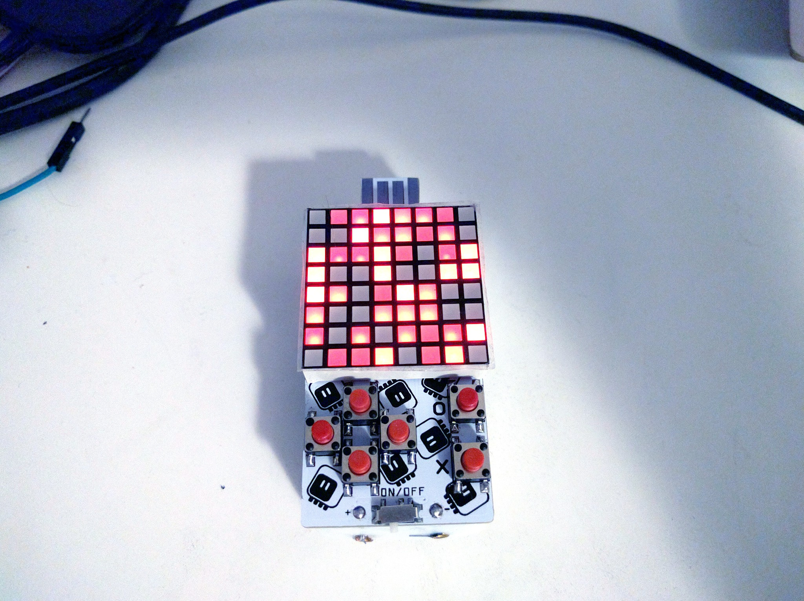

PWM, Flickering and Timers¶
Published on 2018-08-12 in PewPew Standalone.
The new version of the PCB arrived Friday from @oshpark , and in the evening I started working on it. Assembling was straightforward, with just 4 electronic components. I burned the bootloader, adjusted the board definition to the new pins and flashed the firmware, and the old code works. Next, I changed the rows from DigitalInputOutput objects into PWMOut objects with 100kHz frequency, and instead of setting them low or high when scanning the columns, I’m now instead setting the duty cycle to the desired shade. The code compiled and should work in theory…

In practice, turns out that setting the duty cycle sometimes takes longer to actually have an effect, and in that time we already switch to the next column (row on the photo, as the matrix is rotated 90°). The effect is a random flickering below every lit pixel.
I also found a bug in CircuitPython, where when you create a lot of PWMOut objects, some of them will share the compare channels, resulting in effectively always having the same brightness. I suspect that when that bug is fixed, I won’t be able to create so many channels anymore anyways. So this approach, while it sounded great on paper, is not so promising anymore.
But not everything is lost yet! Today I decided to try and create a separate timer, just for the matrix. I found the code that sets up the timer for PulseOut objects, and pretty much copied it, only skipping connecting the pins to the timer. Unfortunately I had to modify the peripherals library in order to add my function to the interrupt handler — so this is no longer a single clean patch. But lo and behold, it works!
Pretty good for not having any idea about what I’m doing. Of course at the moment the code is one huge hack, but that’s not important, I can clean it up. And believe or not, there are actually 4 recognizable shades on that photo (with a naked eye you can’t see the bright spots inside the pixels, and they are all red, not yellow). This also means I will be able to do charlieplexing for that business card.
One problem though — if you look closely, especially on the dimmest- but-not-black pixels, you will see some flickering there. How come? I’m running that timer with prescaler 1, it should run at 48MHz, even dividing that by 8 columns and 6 rendering phases, that’s still 1MHz, there is no way you would be able to see that with a naked eye! So what’s happening? I really have no idea, but I hope it’s something that can be fixed.
I was supposed to be writing a game for Ludum Dare, but instead I worked on this. At least it’s also game-related.